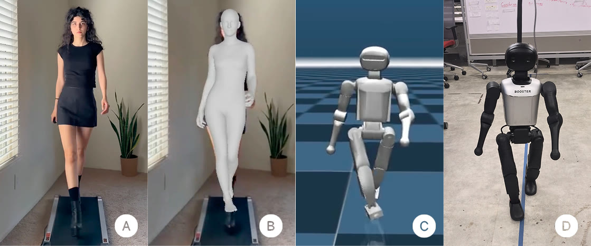
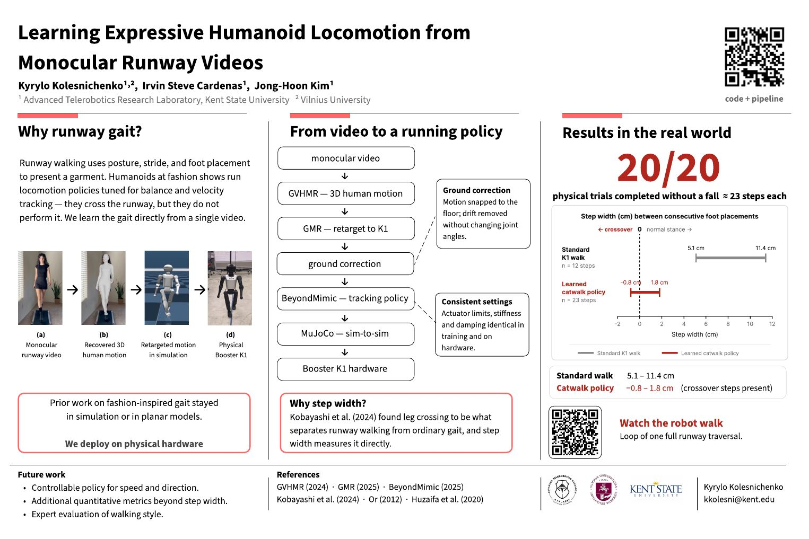

Abstract
Runway walking uses posture, stride, and foot placement to present clothing and express a particular style. However, humanoid robots in fashion shows usually use walking policies designed mainly for balance and speed. We present an end-to-end pipeline that converts a monocular runway video into a deployable humanoid policy through motion recovery, robot retargeting, motion correction, policy training, simulation testing, and physical deployment. We evaluate the pipeline on the Booster K1 using a runway-style motion. The learned policy completed all 20 physical trials without falling and reproduced narrow foot placement together with coordinated leg, torso, and arm movements. Its measured step width ranged from −0.8 to 1.8 cm, compared with 5.1 to 11.4 cm for the standard K1 walk, and included occasional crossover steps.
From video to a running policy

Motion recovery
GVHMR lifts a single static-camera video into world-grounded SMPL-X body motion.
Ground correction
Foot contacts snap the motion to a level floor and remove root drift without changing joint angles.
Retargeting
GMR maps the human skeleton onto the Booster K1’s joints.
Policy training
A BeyondMimic tracking task is generated and trained in Isaac Lab.
Sim-to-sim
The exported policy is checked in MuJoCo with the deployment controller.
Hardware
The same policy runs on the K1 with identical actuator limits, stiffness and damping.
Results on the physical robot
physical trials completed without a fall, about 23 steps each along a 5 m runway.
Step width between consecutive foot placements
The learned policy walks with much narrower foot placement than the stock gait, and sometimes crosses over.
Run it yourself
The repository wires pinned GVHMR, GMR and Booster checkouts into one script. Needs x86_64 Linux, Conda and an NVIDIA GPU.
git clone --recursive https://github.com/Kyk0/expressive-motion.git
cd expressive-motion
bash install.sh # creates the conda environments
conda activate expressive-motion
python scripts/process.py inputs/videos/clip.mp4 --isaac-env env_isaaclab
python scripts/make_task.py --clip clipFull setup, body-model download steps and troubleshooting are in the README.
Citation
@misc{kolesnichenko2026expressive,
title = {Learning Expressive Humanoid Locomotion
from Monocular Runway Videos},
author = {Kolesnichenko, Kyrylo and Cardenas, Irvin Steve
and Kim, Jong-Hoon},
year = {2026},
url = {https://github.com/Kyk0/expressive-motion}
}Poster

Acknowledgements
This work builds directly on:- GVHMR — world-grounded human motion recovery
- GMR — general motion retargeting
- BeyondMimic — motion tracking policies
- Booster Robotics — booster_train, booster_deploy and booster_assets